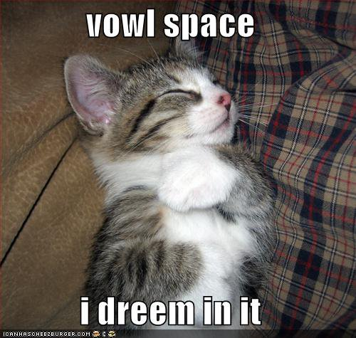
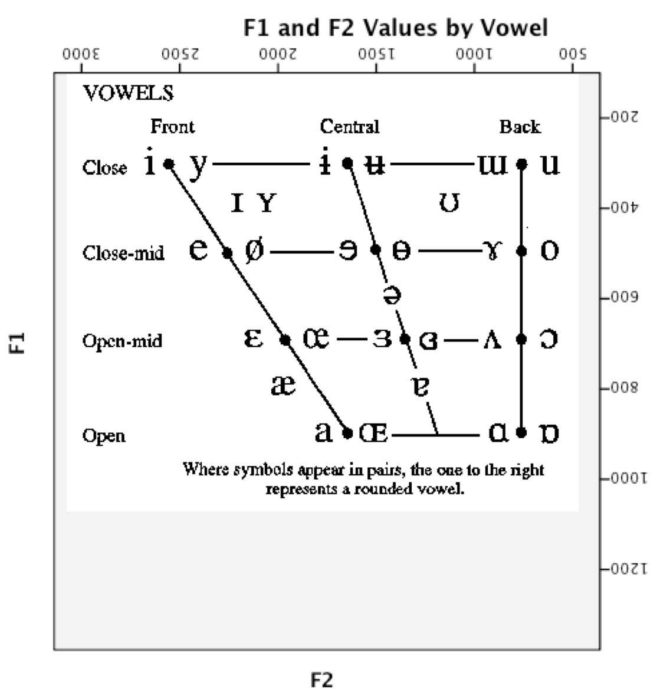
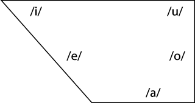
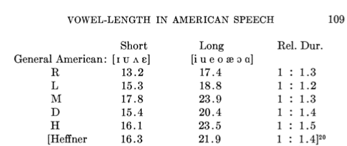

My project for this class
My project for the grad version
My MA Thesis
My Prelim
My Dissertation

Because all languages use vowels, and they work similarly everywhere
Because vowel perception is interestingly complicated
Because it shows us interesting things about sociolinguistic distinctions and the mind
Because it’s a great test case for how the brain deals with variation
Because vowels are awesome
What kind of vowels are we talking about?


A vowel is voicing passing through (and resonating in) an unobstructed vocal tract!
If we change the position of the tongue, we change the resonances

A vowel is voicing passing through (and resonating in) an unobstructed vocal tract!
If we change the position of the tongue, we change the resonances
Different resonances filter the sound differently and determine the vowel quality
Different tongue shapes create different resonances, and different vowels!

We talk about vowel quality in terms of “formants”
These are bands of the spectrum where the energy is strongest
The frequencies of these formants are our primary cues


F1 and F2 are generally considered to be the most important
F3 is good for rounding and rhoticity

 Different
American English vowels, as spoken by a male speaker
Different
American English vowels, as spoken by a male speaker




So…
We listen for formants
We figure out their frequencies
Then we know which vowel we’re hearing.
Vowel differences are gradient
Dialect and language variation is everywhere
Speakers vary from person to person. A lot!
They also vary from moment-to-moment
You can make an infinite number of tongue shapes causing an infinite number of vowels.
There’s no “alveolar ridge” to give a steady target
Phonemes have perceptual boundaries
Not all listeners agree on where the boundaries are between, say, /e/ and /ɛ/
The first and last sounds have formants like the typical English /eɪ/ and /ɛ/vowels

… but in the middle, we’re not really sure what’s going on
The vowel inventory in a language has a strong effect on the perception of vowels
If you have lots of vowels, each one gets less acoustic elbow room


Different speakers produce different resonances, even for the “same” vowels

Different speakers produce different resonances, even for the “same” vowels
Speaker can have colds or allergies, can have more nasal voices…
Sociolinguistic factors galore
Every person has a different set of basic vowel formant positions

Even the same speaker will have variation from moment to moment
Sometimes we misarticulate, accidentally making the wrong vowel quality
Or we talk with food in our mouths, producing different resonances
Or sometimes, we’re just plain lazy
This leads to constant and massive changes in vowel production


| ### Dealing with vowel variability! |
| * We stack the deck in our favor using the phonology of the language |
| * We use non-formant-related cues such as vowel length |
| * We attend to context |
| * We adjust to individual speakers (or vocal tracts) through Speaker Normalization |
| * Then, if all else fails, we pretend that we understood, and hope for the best |
Vowels are spread through the mouth
Languages try to maintain perceptual contrast (to keep things as perceptually unambiguous as possible)
Contrasts that are tough to hear go away!
Rounding is used to distinguish vowels which might otherwise be confusable

Data from Rositske 1939
Context helps us to understand words even if the phonemes are acoustically ambiguous
Easier to understand “Hello” in its normal conversational context
If you’re not expecting a word, you’ll have to fight harder to understand it.
“Hi, John! Partial Nephrectomy!”
“Ohh, Invasive Adenocarcinoma arising in tubulovillious adenoma”
Nobody runs into rooms and shouts “bat!”
Every speaker you meet has acoustically different vowels
We are able to adjust very quickly, and have little trouble with later understanding
The process by which we adjust is called “Speaker Normalization”
This process isn’t entirely understood
| ### History of Normalization |
| * Differences in absolute vowel qualities were noted very early on |
| * Two Competing Theories in the 40’s and 50’s: |
| * Peterson: We identify vowels based on their absolute formant frequencies |
| * Joos: We identify vowels based on their relative formant structures |
| * If Joos is right, then prior context aids in normalization |
| * Ladefoged and Broadbent set out to test that idea in “Information conveyed by vowels” in 1957 |
Ladefoged and Broadbent 1957
Six versions of an introductory sentence were synthesized, each with different formant structures
Four test words were synthesized as well
Listeners heard different combinations of test words and sentences
If vowel perception is about absolute frequencies, the prior sentence shouldn’t matter!


They had to paint what they wanted on glass

| Then feed it into an analog sound synthesizer |
 |
… but it worked!

“The linguistic information conveyed by a vowel is largely dependent on the relations between the frequencies of its formants and the formants of other vowels occurring in the same auditory context”
We’ve got two main theories!
Normalization is a process that “happens”
You meet somebody, you create a model of their vowel space, and you move on
These models of speaker vowels are maintained in memory
One model per person, and a new model each time!
We store information from every vowel we hear!
Normalization is then just bulk comparison and probability
One might start with an “English” vowels model
Then, you build a per-speaker exemplar cloud
Both your per-speaker and overall models change

It’s not just about the point vowels (/i, a, u/) as Joos suggested (Verbrugge et. al. 1976)
Context influences Normalization (as in Ladefoged and Broadbent)
Knowledge about the speaker (gender, sociolinguistic data) influences normalization (Strand 2000)
Recent context might be more important than older context (Ciocca, Wong, et al. 2006)
The normalization process shows up in reaction time during vowel identification tasks (Haggard and Summerfield 1977)
Breath sounds don’t provide good information for normalization, and F0 isn’t a critical factor (Walen & Sheffert 1997)
More context seems helpful, but only to a certain point (Kakehi 1992)
We have to normalize to consonants too *Some evidence that vowel formants are used to normalize /s/ vs. /ʃ/
Infants Can normalize to vowels (Kuhl 1979)
So can dogs (Baru 1975) and Zebra Finches (Ohms et al 2009)
These finches are a major problem.
Formants (F1 & F2) are (still) the primary means of identifying vowels
Vowel perception is complicated by the enormous variation between speakers and tokens
Our vowel judgements are affected by the language we speak and by context
The phonology helps make things perceptually easier
Vowel charts, although well-intentioned, are dirty, dirty abstractions
Vowel perception is basically magic
http://savethevowels.org/talks/vowelperception.html
Baru, A. V. (1975). Discrimination of synthesized vowels /a/ and /i/ with varying parameters (f0, intensity, duration, # of formants) in dog. In G. Fant, & M. A. A. Tatham (Eds.), Auditory Analysis and perception of speech. New York: Academic Press.
Ciocca, V., Wong, N. K. Y., Leung, W. H. Y., & Chu, P. C. Y. (2006). Extrinsic context affects perceptual normalization of lexical tone. The Journal of the Acoustical Society of America, Vol. 119, No. 3, 1712-1726.
Joos, M. (1948). Acoustic Phonetics - Supplement to Language. Baltimore: Linguistic Society of America.
Ladefoged, P., & Broadbent, D. E. (1957). Information Conveyed by Vowels. The Journal of the Acoustical Society of America, Volume 29, Number 1, 98-104.
Ohms et al. Zebra finches exhibit speaker-independent phonetic perception of human speech. Proceedings of the The Royal Society of Biological Sciences (2009)
Rositzke, H. A. (1939). Vowel-Length in General American Speech. Language, Vol. 15, No. 2, 99-109.
Verbrugge, R. R., Strange, W., Shankweiler, D. P., & Edman, T. R. (1976). What information enables a listener to map a talker's vowel space? Journal of the Acoustical Society of America, Vol. 60, No. 1, 198-212.
Whalen, D. H., & Sheffert, S. M. (1997). Normalization of Vowels by Breath Sounds. In K. Johnson, & J. W. Mullenix (Eds.), Talker Variability in Speech Processing (pp. 133-143). San Diego, CA: Academic Press Ltd.